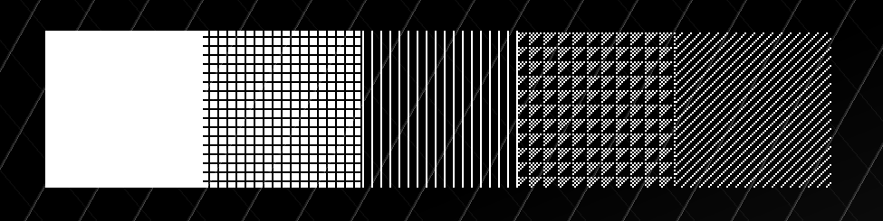
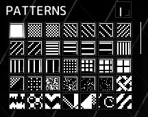

Patterns can restrict tools to only affect pixels matching the selected pattern.
This can help with such tasks as shading or fading between colors.

To open the Patterns menu, click on the button in the top right corner of the Tools panel indicated with the icon of the current Pattern. 
By default, the Full Pattern is selected, which means tools will affect every pixel.
To start using a Pattern, click on its button in the Patterns menu and use tools like you normally would.
When a Pattern is selected, its icon will be shown near the mouse cursor.
To stop using a Pattern, simply switch to the Full Pattern, which is the first one on the list.
To invert a Pattern, click on the button labelled to toggle inversion mode.
By saving images in XBM or PBM (Portable Bitmap) format to the patterns/ folder in the Application data directory, you can add custom Patterns.